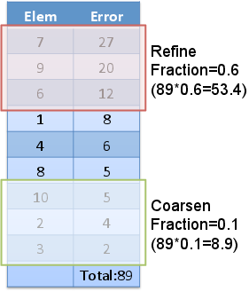

- indicatorThe name of the Indicator that this Marker uses.
C++ Type:IndicatorName
Controllable:No
Description:The name of the Indicator that this Marker uses.
Errorfractionmarker
Marks elements for refinement or coarsening based on the fraction of the min/max error from the supplied indicator.
Description
The ErrorFractionMarker utilizes the value from an Indicator as a measure of "error" on each element. Using this error approximation the following algorithm is applied:

ErrorFractionMarker example calculation.
The elements are sorted by increasing error.
The elements comprising the "refine" fraction, from highest error to lowest, of the total error are marked for refinement.
The elements comprising the "coarsen" fraction, from lowest error to highest, of the total error are marked for refinement.
Example Input Syntax
[Adaptivity]
[Indicators]
[error]
type = AnalyticalIndicator
variable = u
function = solution
[]
[]
[Markers]
[marker]
type = ErrorFractionMarker
coarsen = 0.1
indicator = error
refine = 0.3
[]
[]
[]
Input Parameters
- blockThe list of blocks (ids or names) that this object will be applied
C++ Type:std::vector<SubdomainName>
Controllable:No
Description:The list of blocks (ids or names) that this object will be applied
- clear_extremesTrueWhether or not to clear the extremes during each error calculation. Changing this to `false` will result in the global extremes ever encountered during the run to be used as the min and max error.
Default:True
C++ Type:bool
Controllable:No
Description:Whether or not to clear the extremes during each error calculation. Changing this to `false` will result in the global extremes ever encountered during the run to be used as the min and max error.
- coarsen0Elements within this percentage of the min error will be coarsened. Must be between 0 and 1!
Default:0
C++ Type:double
Controllable:No
Description:Elements within this percentage of the min error will be coarsened. Must be between 0 and 1!
- refine0Elements within this percentage of the max error will be refined. Must be between 0 and 1!
Default:0
C++ Type:double
Controllable:No
Description:Elements within this percentage of the max error will be refined. Must be between 0 and 1!
Optional Parameters
- control_tagsAdds user-defined labels for accessing object parameters via control logic.
C++ Type:std::vector<std::string>
Controllable:No
Description:Adds user-defined labels for accessing object parameters via control logic.
- enableTrueSet the enabled status of the MooseObject.
Default:True
C++ Type:bool
Controllable:No
Description:Set the enabled status of the MooseObject.
- outputsVector of output names were you would like to restrict the output of variables(s) associated with this object
C++ Type:std::vector<OutputName>
Controllable:No
Description:Vector of output names were you would like to restrict the output of variables(s) associated with this object